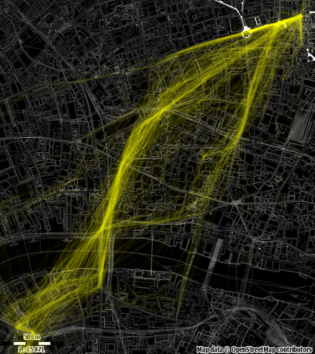
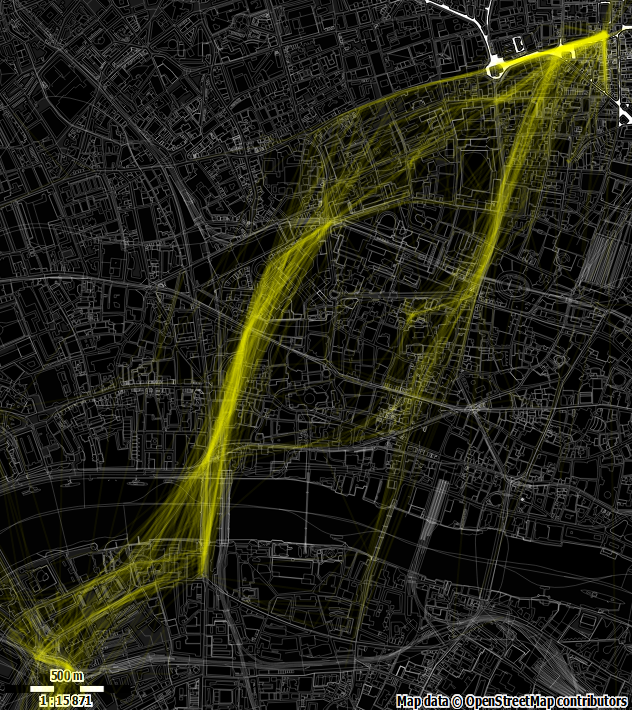

LocationHistory visualisation part 3
James Uther
2014-10-31
I'm a bit like a dog with a bone about this LocationHistory thing (or a dog returning to his vomit?). Previously I had a bash at mapping my movements around London, then spent a bit of time trying to find out what the file format really was. This time, I'd like to tidy up and do something reasonable.
So, at least we can now say that LocationHistory.json can be used to generate time/latitude/longitude triples at which my phone had reason to suspect I was on a bicycle. Fine. Let's go and get those.
import pandas as pd
j = json.load(open('LocationHistory.json', 'rb'))['locations']
d = []
for i in j:
r = {'longitude': float(i['longitudeE7']) / 10**7,
'latitude' : float(i['latitudeE7']) / 10**7}
for k in i.get('activitys', []):
if u'onBicycle' in map(lambda x: x['type'], k['activities']):
nr = r.copy()
nr['timestamp'] = int(k['timestampMs'])
d.append(nr)
df = pd.DataFrame(d)
df.to_csv('bicyclesFull.csv')
Now I want this to look a bit designer-y, this being in Hoxton and all. How about a nice dark theme, with 'process yellow' (aka 'yellow') markings? Google maps are now quite themeable, but I'm going to try something new this time – Fire up maperitive and get an SVG image of the area drawn with openstreetmap data using a slightly modified version of their wireframe rules. Great. And remember to record the bounding box for matching up the coordinates when we go and draw all over it.
We then use d3.js to grab the time/latitude/longitude triples. We want to draw lines between points that are adjacent in time, so we sort the data accordingly. Now we could iterate through and add the lines in one bash, but it would be nice to visualise the movement a bit, so we need to break each addition with a setTimeout() to let the rendering loop have a look-in. We draw each line at full strength but fading to a low opacity so that high traffic areas will build up and be more visible. The data set has all my cycling data, but I won't bother to cull them here – they just won't be visible.
The result is a rather pleasing zoomy sort of effect
Produced with pretty simple code:
function clean(d) {
d.latitude = parseFloat(d.latitude);
d.longitude = parseFloat(d.longitude);
d.timestamp = parseFloat(d.timestamp) / 1000;
return d;
}
function tick(c, x, y, data) {
if (data.length <= 1) {console.log('done'); return;}
var d1 = data.shift();
var d2 = data[0];
var dst = Math.sqrt(Math.pow(Math.abs(d1.longitude - d2.longitude), 2) +
Math.pow(Math.abs(d1.latitude - d2.latitude), 2));
if (dst < 0.02) {
c.append('line')
.attr('x1',x(d1.longitude)).attr('x2',x(d2.longitude))
.attr('y1',y(d1.latitude)).attr('y2',y(d2.latitude))
.attr('stroke-width', 2).attr('stroke','yellow').attr('opacity', 1)
.transition().attr('opacity', '0.1');
}
setTimeout(tick, 0, c, x, y, data);
}
function svgLoaded(xml) {
document.body.appendChild(xml.documentElement);
var svg = d3.select('svg');
var bbox = [51.5023223705702,-0.116449968400531,51.5282224872759,-0.079421512868276];
var width = svg[0][0].clientWidth;
var height = svg[0][0].clientHeight;
var x = d3.scale.linear().domain([bbox[1], bbox[3]]).range([0,width])
var y = d3.scale.linear().domain([bbox[0], bbox[2]]).range([height,0]);
d3.csv("https://dl.dropboxusercontent.com/u/xxx/bicyclesFull.csv",
function (data) {tick(svg, x, y,
data.map(clean)
.sort(function(a, b){
return a.timstamp - b.timestamp;}))});}
document.addEventListener("DOMContentLoaded", function() {
d3.xml("https://dl.dropboxusercontent.com/u/xxx/output.svg",
"image/svg+xml",
function(xml) {svgLoaded(xml);})});So quite nice, but we note that if two points are quite a distance
apart the joining line doesn't contain much information about the path
actually travelled between those points. We thus start to cull lines
that are long (playing with the (dst < xxx) value in
the code above). Shorter lines do seem to give more 'shape' to the
routes.
 
And the limit of short lines is a point. How about we just plot the points, instead of trying to join them? After all, we have lots of data, so it might tell us something now that we've filtered it to only the activity we're looking for. Replace the line drawing code above with circles (and add a small random 'wiggle' factor so that drawing the same point multiple times gives a kind of heatmap effect):
var wigglex = (Math.random()-0.5)*4, wiggley = (Math.random()-0.5)*4;
c.append('circle')
.attr('cx', x(d1.longitude) + wigglex)
.attr('cy', y(d1.latitude) + wiggley)
.attr('r', 2).attr('fill', 'yellow').attr('opacity',1)
.transition().style("opacity", "0.2");This actually makes me quite happy. You can see the most commonly travelled routes pretty well. You can also see where I've generally stopped at traffic lights and the like (yes, I do actually stop). Itch just about scratched I think.
There's a Codepen, but I've removed my location data so you'll need to plug in your own.
function clean(d) {
d.latitude = parseFloat(d.latitude);
d.longitude = parseFloat(d.longitude);
d.timestamp = parseFloat(d.timestamp) / 1000;
return d;
}
function tick(c, x, y, data) {
if (data.length <= 1) {console.log('done'); return;}
var d1 = data.shift();
var wigglex = (Math.random()-0.5)*4, wiggley = (Math.random()-0.5)*4;
c.append('circle')
.attr('cx', x(d1.longitude) + wigglex)
.attr('cy', y(d1.latitude) + wiggley)
.attr('r', 2).attr('fill', 'yellow').attr('opacity',1)
.transition().style("opacity", "0.2");
setTimeout(tick, 0, c, x, y, data);
}
function svgLoaded(xml) {
document.body.appendChild(xml.documentElement);
var svg = d3.select('svg');
var bbox = [51.5023223705702,-0.116449968400531,51.5282224872759,-0.079421512868276];
var width = svg[0][0].clientWidth;
var height = svg[0][0].clientHeight;
var x = d3.scale.linear().domain([bbox[1], bbox[3]]).range([0,width])
var y = d3.scale.linear().domain([bbox[0], bbox[2]]).range([height,0]);
d3.csv("https://dl.dropboxusercontent.com/u/xxx/bicyclesFull.csv",
function (data) {tick(svg, x, y,
data.map(clean)
.sort(function(a, b){
return a.timstamp - b.timestamp;}))});}
document.addEventListener("DOMContentLoaded", function() {
d3.xml("https://dl.dropboxusercontent.com/u/xxx/output.svg",
"image/svg+xml",
function(xml) {svgLoaded(xml);})});